MASKLESS LITHO v2.0.9
operator manualDLP 마스크리스 리소그래피 장비에서 이미지, GDS, Draw CAD 패턴을 정렬하고 노광하는 Windows 데스크톱 프로그램입니다.
작업자가 바로 따라 할 수 있는 기능별 운용 메뉴얼
이 문서는 v2.0.9 릴리즈 기준으로 장비 연결, TEST Mode, Pattern Settings, Align Viewer, UV Keystone, Draw CAD, GDS Import, Expose Setup까지 실제 작업 흐름에 맞춰 정리했습니다.
maskless_v2_0_9.exe --motorized-focus 내부 모드로 실행됩니다.
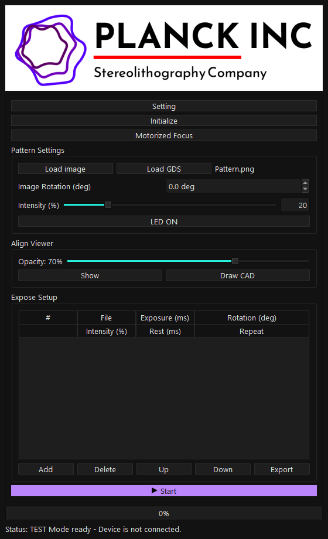
Quick Start
장비 연결부터 첫 노광까지 가장 짧은 경로입니다. 실제 샘플을 올리기 전에 반드시 TEST Mode와 DLP 표시 대상을 먼저 확인하세요.
dist\maskless_v2_0_9.exe를 실행합니다.Setting > Display에서 DLP 모니터가MASKLESS LITHO Display로 잡혔는지 확인하고Apply를 누릅니다.- 장비 없이 UI만 확인할 때는
Setting > Expose > TEST Mode를 켭니다. 실제 노광 전에는 의도한 상태인지 다시 확인합니다. Load image로 PNG/BMP/JPG를 불러오거나Load GDS로 GDS/GDS2 layout을 DLP PNG로 변환합니다.Align Viewer > Show를 눌러 카메라 화면 위에 노광 패턴을 겹쳐 보고, 위치와 크기를 맞춥니다.- 카메라 기준 정렬은
Align Wizard의 1/2/4 Point Align을 사용하고, 실제 UV 출력 왜곡은UV Keystone Calibration으로 보정합니다. Expose Setup > Add로 row를 추가한 뒤 Exposure, Rotation, Intensity, Rest, Repeat 값을 확인하고Start를 누릅니다.
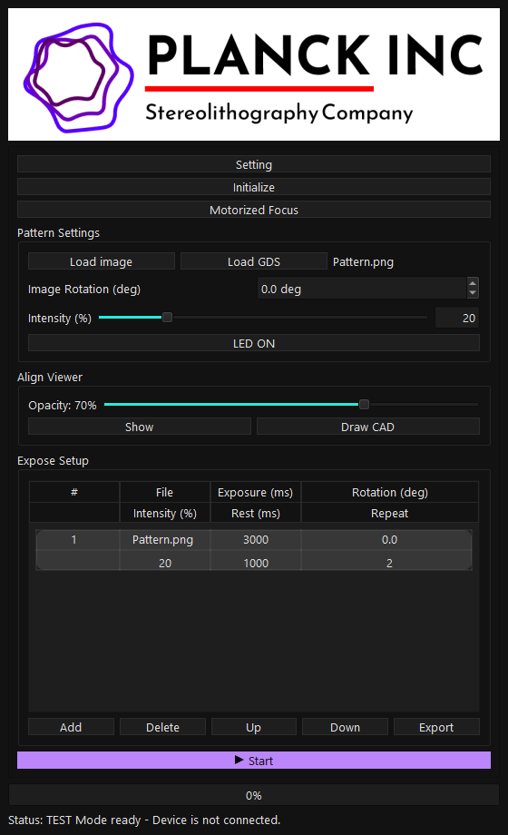
- DLP 출력 화면은 일반 모니터가 아니라 실제 DLP 컨트롤러 화면이어야 합니다.
LED ON은 수동 확인용입니다. 켜 둔 상태에서는 GDS Import와 Motorized Focus 같은 일부 작업이 차단됩니다.- 노광 중 이상이 있으면
Stop을 먼저 누르고, DLP 화면이 검은 화면으로 돌아왔는지 확인합니다. - CAD/GDS를 사용할 때는 현재 렌즈의 CAD scale profile과 DLP display 설정이 맞아야 합니다.
Safety
UV/DLP 출력은 샘플과 장비에 직접 영향을 줍니다. TEST Mode, Stop, display 선택, manual LED 상태를 작업 전후로 확인하세요.
- DLP 컨트롤러와 광학 경로가 안전하게 준비되어 있는지 확인합니다.
Setting > Display에서 DLP 모니터를 선택한 뒤Apply를 누릅니다.- 노광 전
Exposure (ms),Intensity,Repeat,Rest (ms)값을 재확인합니다. - 실제 장비 사용 시
TEST Mode가 꺼져 있어야 하고, 장비 없는 UI 테스트라면 켜져 있어야 합니다. - 수동
LED ON상태에서 창을 닫거나 다른 workflow로 넘어가지 않습니다. - 비상 시에는
Stop을 누른 뒤 DLP 출력이 black output으로 복귀했는지 확인합니다.
v2.0.9에서는 충돌을 막기 위해 sequence, CAD Expose, manual LED ON 중에는 Motorized Focus 실행을 차단합니다.
An exposure sequence or CAD exposure is running. Stop it before opening Motorized Focus.Exposure is running. Stop it before opening Motorized Focus.Manual LED output is active. Turn LED OFF before opening Motorized Focus.
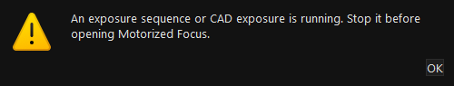
DLP monitor 선택이 틀리면 작업자 모니터에 전체 화면 패턴이 뜨거나 실제 DLP에는 출력되지 않을 수 있습니다. Current display와 GPU 표시를 확인하세요.
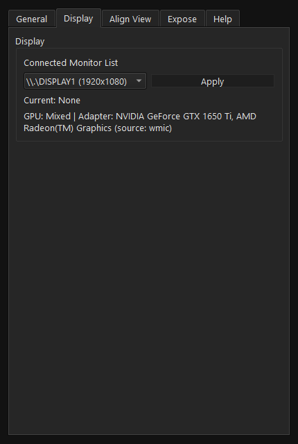
Display 탭입니다. 연결된 monitor 목록에서 DLP display를 선택하고 Apply로 적용합니다." loading="lazy">Install/Run
릴리즈 exe 실행, 개발 환경 실행, requirements 설치, Motorized Focus 내부 모드 실행 방법을 구분해서 정리했습니다.
cd C:\GitProjects\MASKLESSLITHO
dist\maskless_v2_0_9.exev2.0.9 배포 zip은 maskless_v2_0_9.exe 단일 실행 파일 구성을 기준으로 합니다. 일반 작업자는 이 exe만 실행하면 됩니다.
cd C:\GitProjects\MASKLESSLITHO
.\venv64\Scripts\python.exe main.py소스에서 실행할 때는 repository의 가상환경과 requirements가 준비되어 있어야 합니다.
python -m venv venv64
.\venv64\Scripts\python.exe -m pip install -r requirements.txtMotorized Focus만 내부 모드로 직접 띄워야 할 때는 다음 형식을 사용합니다.
maskless_v2_0_9.exe --motorized-focus일반 사용자에게는 별도 Motorized_Focus.exe를 전달하지 않아도 됩니다.
Main Window
메인 창은 장비 초기화, 패턴 로드, 정렬, CAD 작성, 노광 sequence를 한 화면에서 진행하도록 구성되어 있습니다.
| 영역 | 역할 | 작업자가 확인할 것 |
|---|---|---|
Setting | General, Display, Align View, Expose, Help 설정 | DLP display, TEST Mode, LUT, Compensation, UV Keystone 상태 |
Initialize | DLP controller Power ON 초기화 | 실제 장비 연결 전 TEST Mode 여부 |
Motorized Focus | 초점 제어 UI 실행 | 노광/수동 LED 중이면 먼저 Stop 또는 LED OFF |
Pattern Settings | 이미지/GDS 로드, 회전, intensity, manual LED | 파일명, rotation, intensity 단위 |
Align Viewer | 카메라 화면 위 overlay 정렬 | Show, Opacity, Draw CAD, Align Wizard |
Expose Setup | 노광 sequence 추가/편집/실행 | Exposure, Rest, Repeat, Rotation, Intensity |
Motorized Focus
v2.0.9에서 추가된 Focus 런처입니다. 별도 sidecar exe 없이 현재 릴리즈 exe의 내부 모드로 Focus 창을 띄웁니다.
Initialize 아래의 Motorized Focus 버튼을 누르면 maskless_v2_0_9.exe --motorized-focus 내부 모드가 실행됩니다.
릴리즈 배포 시에는 maskless_v2_0_9.exe 하나만 전달하면 되며, 별도 Focus exe가 없어도 됩니다.
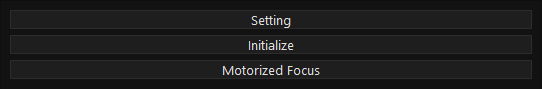
- sequence 노광이 실행 중이면 Focus를 열 수 없습니다.
- CAD Expose Now가 실행 중이면 Focus를 열 수 없습니다.
- manual
LED ON상태이면 Focus를 열 수 없습니다. - 이미 Focus 창이 떠 있으면 새로 열지 않고 기존 실행 상태를 알려줍니다.
| 메시지 | 원인 | 해결 |
|---|---|---|
An exposure sequence or CAD exposure is running... | sequence 또는 CAD Expose Now 실행 중 | Stop 후 다시 실행 |
Manual LED output is active... | 수동 LED가 켜져 있음 | LED OFF 후 다시 실행 |
Motorized Focus is already running. | Focus 창 중복 실행 시도 | 기존 Focus 창을 사용 |
Motorized Focus failed to launch | 내부 모드 실행 실패 | 릴리즈 exe 위치와 로그 확인 |
Pattern Settings
노광할 패턴을 불러오고, 회전과 intensity를 지정하며, 수동 LED 확인을 수행하는 기본 입력 영역입니다.
Load image: PNG/BMP/JPG 같은 일반 이미지를 불러옵니다.Load GDS: .gds/.gds2 layout을 layer/datatype 선택 후 DLP 해상도 PNG로 변환합니다.Image Rotation (deg): 현재 패턴의 회전값을 -180~180도 범위에서 0.1도 단위로 조정합니다.Intensity (%): 기본 intensity 입력입니다. Calibration LUT가 켜지면 lens 기준 mW/cm2 단위로 전환될 수 있습니다.LED ON: 정렬 확인용 수동 DLP 출력입니다. 실제 샘플에서 사용할 때는 노광 위험을 고려해야 합니다.
- 일반 이미지면
Load image, layout이면Load GDS를 누릅니다. - 파일명이
N/A에서 실제 파일명으로 바뀌었는지 확인합니다. - 필요하면
Image Rotation (deg)를 조정합니다. - Intensity 값을 확인합니다. Calibration이 켜져 있으면 lens 선택도 함께 확인합니다.
- 정렬 확인이 필요할 때만
LED ON을 사용하고, 다음 작업 전에는LED OFF로 되돌립니다.
- 활성 UV Keystone profile이 있으면 Load image, CAD, GDS, Sequence, Expose Now, manual LED ON 출력 직전에 DLP pixmap이 보정됩니다.
- GDS 결과는 편집 가능한 Draw CAD 도형이 아니라 흑백 DLP PNG입니다.
- 수동
LED ON상태에서는 GDS Import와 Motorized Focus 같은 작업이 차단될 수 있습니다.
Align Viewer
카메라 또는 현미경 화면 위에 노광 패턴을 overlay로 띄워 실제 샘플 위치와 패턴 위치를 맞추는 기능입니다.
Show: Align View 창을 표시하거나 숨깁니다.Opacity: overlay 투명도를 조정합니다.- 창 드래그: Align View 위치를 이동합니다.
- 모서리 드래그: Align View 크기를 조정합니다.
Shift+ 크기 조정: 기존 이미지 비율을 유지하며 리사이즈합니다.Draw CAD: 현재 Align View와 같은 이미지 평면 위에서 CAD View를 엽니다.
Setting > Align View에서 Rotation Angle, Reset Align, Align Wizard, UV Keystone 상태를 관리합니다.
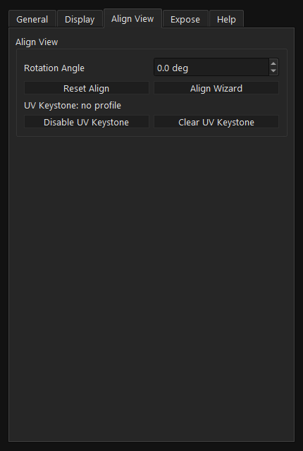
Align View 탭입니다. Align View 회전, 초기화, Align Wizard, UV Keystone 상태를 한곳에서 확인합니다." loading="lazy">- Align View는 화면 표시 정렬용입니다. 실제 DLP 출력 왜곡 보정은
UV Keystone Calibration이 담당합니다. - Draw CAD를 열려면 이미지가 먼저 로드되어 있어야 하고, Align View가
Show상태여야 합니다. - Draw CAD 작업 전에는 Align View를
MASKLESS LITHO Display위가 아닌 작업자 화면 쪽으로 옮겨야 합니다.
Align Wizard
현미경 화면과 Align View overlay 사이의 기준점을 잡아 1점, 2점, 4점 정렬을 계산하는 도우미입니다.
1 Point Align: 한 기준점으로 위치 이동을 맞춥니다.2 Point Align: 위치, 회전, scale을 함께 맞춥니다.4 Point Keystone Align: Align View 창의 표시 keystone을 맞춥니다.Preview Calculate: 적용 전 미리 계산 결과를 확인합니다.Apply: 계산된 transform을 Align View에 적용합니다.
4 Point Keystone Align은 Align View 표시를 맞추는 기능입니다. UV Keystone Calibration은 실제 DLP에서 조사되는 UV 패턴 자체를 역왜곡해 보정하는 별도 기능입니다.
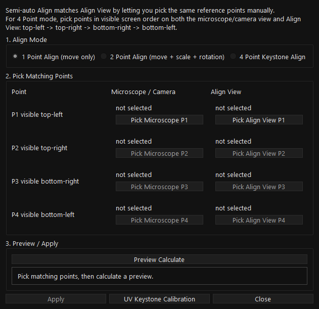
Align View is not open. Click Show first, then run Align Wizard.: Align View를 먼저 Show로 열어야 합니다.Calculate a preview before applying.: Apply 전 Preview Calculate가 필요합니다.Preview failed또는Apply failed: 기준점 선택과 Align View 상태를 다시 확인합니다.
UV Keystone Calibration
실제 DLP 출력 PNG를 역보정하는 v2.0.9 핵심 보정 기능입니다. Align View 의존 없이 DLP display와 카메라 화면 클릭만으로 17점 profile을 만듭니다.
- DLP에 raw 기준점을 하나씩 출력하고, 카메라/현미경 화면에서 해당 위치를 클릭합니다.
- 17개 기준점은 outer 4x4 grid와 center point로 구성됩니다.
- 각 기준점은 4회 반복 클릭해 측정 안정성을 높입니다.
- 완료되면
.maskkeystoneprofile이 저장되고 활성화됩니다.
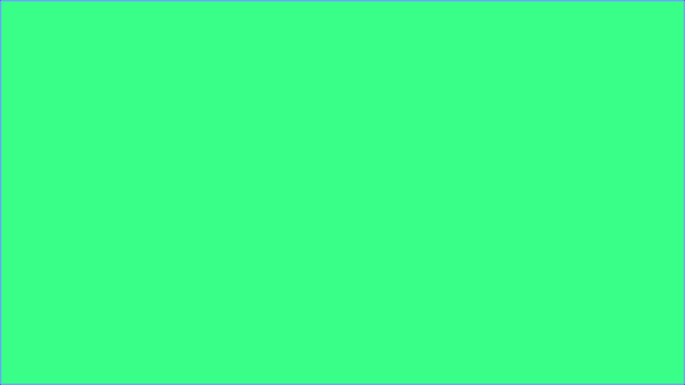
Setting > Display에서 DLP monitor가 선택되어 있는지 확인합니다.Setting > Align View > Align Wizard를 엽니다.UV Keystone Calibration을 누릅니다.Start Calibration을 누릅니다.- DLP에 표시되는 raw point를 카메라 화면에서 찾아 클릭합니다.
- 각 point를 4회 반복 클릭합니다.
- 17점이 끝나면 profile이 저장되고 활성화됩니다.
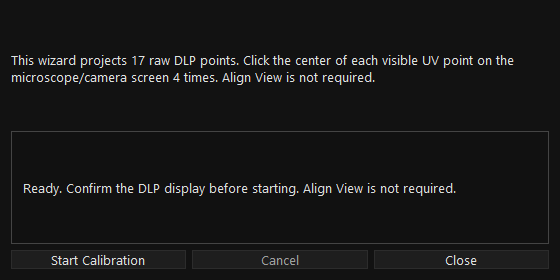
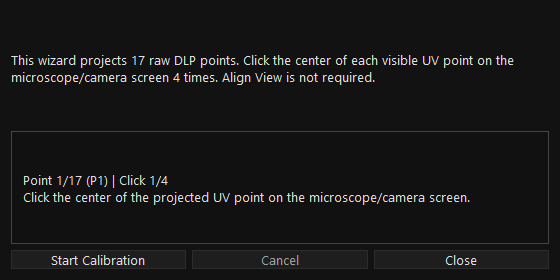
활성 profile은 일반 이미지, CAD, GDS, Sequence, Expose Now, manual LED ON 출력 직전에 적용됩니다. Calibration 중에는 기존 profile을 우회해 raw DLP 기준점이 출력됩니다.
- 상태 확인:
Setting > Align View의 UV Keystone status - 일시 해제:
Disable UV Keystone - 활성 profile 삭제/초기화:
Clear UV Keystone - 저장 위치:
%USERPROFILE%\.maskless_v2\keystone\*.maskkeystone
Draw CAD
Align View와 같은 이미지 평면 위에서 도형을 직접 그리고, DLP-ready PNG 또는 편집 가능한 .maskcad 문서로 저장하는 기능입니다.
Select: 기존 도형 선택, 이동, handle 편집Rect: 사각형 작성Ellipse: 원/타원 작성Line: 선 작성Polyline: 여러 점을 이어 열린 선 작성Polygon: 여러 점을 이어 닫힌 면 작성, 내부 채움 노광Measure: 거리와 각도 측정, 노광 결과에는 포함되지 않음
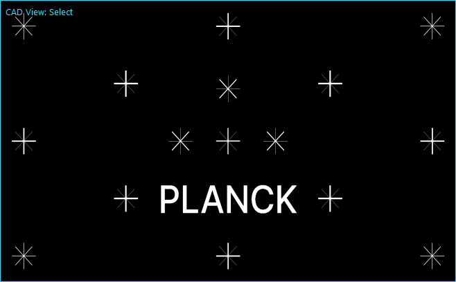
Grid Snap: 점을 지정한 um 간격에 맞춥니다.Grid um: grid 간격을 설정합니다.W um,H um: 선택 도형의 실제 크기 입력입니다.Stroke um: 선 또는 외곽선 두께입니다.um/px X,um/px Y: 현재 렌즈의 카메라 pixel-to-um scale입니다.Save Scale: 현재 렌즈 scale profile을 저장합니다.Array Nx/Ny,Pitch X/Y: 선택 도형을 배열 복제합니다.
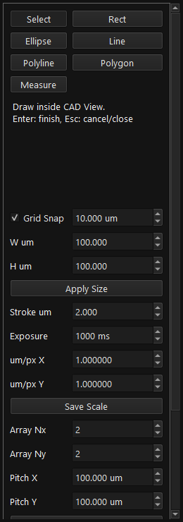
Ctrl+Z: Undo,Ctrl+Y: RedoDelete: 선택 도형 삭제Enter: Polyline/Polygon 작성 완료Esc: 현재 작업 취소 또는 CAD View 닫기- 출력 전 최소 한 개 이상의 도형이 필요합니다.
- 출력 전 현재 렌즈의 scale profile을 저장해야 합니다.
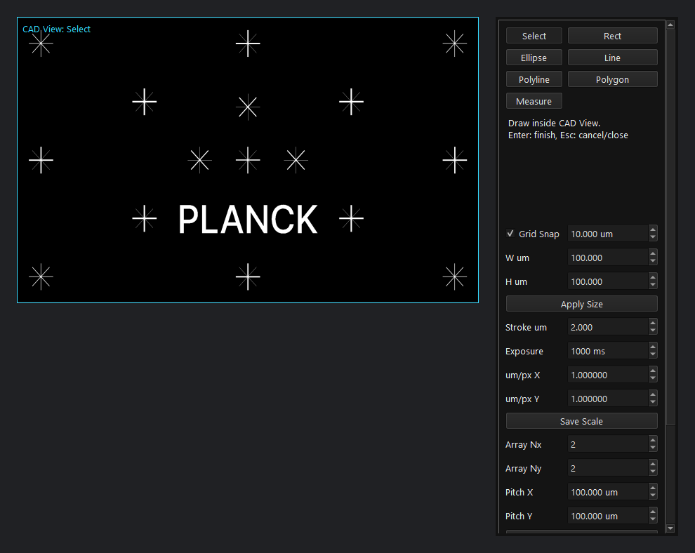
CAD Output
Draw CAD 결과를 저장, 다시 불러오기, PNG export, Pattern Settings 적용, 즉시 노광까지 이어주는 출력 영역입니다.
Save CAD: 편집 가능한.maskcadJSON 문서를 저장합니다.Load CAD: 저장된.maskcad문서를 다시 열어 편집합니다.Export PNG: DLP 해상도 PNG와 paired.maskcad를 원하는 위치에 저장합니다.Apply: 생성된 PNG를 메인Pattern Settings에 로드합니다.Expose Now: 확인창 후 CAD 결과를 1회 노광합니다.Include Base Image: 기존 base image 위에 CAD 도형을 합쳐 output을 만듭니다.

Draw at least one shape before output.: 출력할 CAD 도형이 없습니다.Save a lens scale profile before output.: 현재 렌즈의 um/px scale profile 저장이 필요합니다.MASKLESS LITHO Display is not set.: DLP display 적용 후 다시 시도합니다.A sequence is already running.: sequence가 끝나거나 Stop된 뒤 Expose Now를 사용합니다.
GDS Import
GDS/GDS2 layout에서 layer/datatype을 선택해 DLP 해상도 PNG로 변환하고, 일반 이미지처럼 Pattern Settings에 로드합니다.
- 현재 렌즈의 CAD scale profile을 저장합니다.
Setting > Display에서MASKLESS LITHO Display가 설정되어 있는지 확인합니다.Pattern Settings > Load GDS를 누릅니다..gds또는.gds2파일을 선택합니다.Select GDS Layerdialog에서 변환할 layer/datatype을 선택합니다.- 프로그램이 DLP 해상도 PNG를 생성하고 Pattern Settings에 로드합니다.
Add로 sequence에 넣고 일반 이미지처럼Start로 노광합니다.
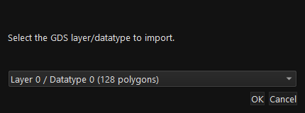
- GDS 결과는 Draw CAD에서 편집 가능한 도형으로 가져오지 않습니다.
- 선택한 layer/datatype의 geometry가 DLP 영역 밖이면 visible pixel이 없을 수 있습니다.
- GDS import 전 sequence 실행 중 또는 manual LED ON 상태이면 작업이 차단됩니다.
- 실제 장비에서는 TEST Mode가 꺼져 있는지, DLP monitor가 맞는지 확인해야 합니다.
| 메시지 | 의미 | 해결 |
|---|---|---|
No renderable GDS layers were found. | 변환 가능한 layer가 없음 | GDS 구조와 cell/layer 확인 |
No renderable GDS geometry was found for the selected cell/layer. | 선택한 layer/datatype에 geometry가 없음 | 다른 layer/datatype 선택 |
Selected GDS geometry is outside the DLP area... | scale/origin 문제 | scale profile과 layout 위치 확인 |
Selected GDS geometry produced no visible pixels. | 최종 PNG에 보이는 pixel 없음 | scale, origin, layer 다시 확인 |
Expose Setup
여러 패턴을 순서대로 노광하기 위한 sequence table입니다. Add로 현재 패턴을 넣고, 각 row의 시간/강도/반복 값을 편집합니다.
Add: 현재 Pattern Settings 이미지를 sequence에 추가합니다.Delete: 선택 row를 삭제합니다.Up/Down: 선택 row 순서를 변경합니다.Export: Expose Setup table을 파일로 내보냅니다.Start: sequence를 시작합니다.Next: 정렬 대기 step 이후 다음 노광으로 진행합니다.Stop: 실행 중 sequence를 멈추고 DLP 출력을 black으로 되돌립니다.
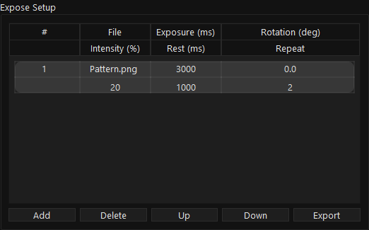
File: 노광할 이미지 또는 변환된 CAD/GDS PNG입니다.Exposure (ms): 노광 시간입니다.Rotation (deg): row별 회전값입니다.Intensity (%): 기본 intensity 단위입니다.Intensity (mW/cm2): Calibration LUT ON 상태에서 lens 기준으로 변환된 단위입니다.Rest (ms): row 사이 대기 시간입니다.Repeat: 반복 횟수입니다.
- 실행 중에는 setup이 lock되어 임의 수정이 제한됩니다.
Expose Setup has no valid image steps to run.메시지가 나오면 Add로 유효한 패턴 row를 먼저 추가합니다.MASKLESS LITHO Display is not set.메시지가 나오면 Setting > Display를 먼저 적용합니다.- 긴 sequence는 Export로 조건을 보관한 뒤 실행하면 재현성이 좋아집니다.
Calibration LUT
렌즈별 LUT를 불러와 사용자가 입력한 intensity를 실제 광량 단위로 변환해 sequence와 Pattern Settings에 반영합니다.
Setting > Expose를 엽니다.Calibrationcheckbox를 켭니다.Load로 LUT file을 불러옵니다.- Pattern Settings에 lens dropdown이 표시되면 사용할 lens를 선택합니다.
- Intensity 입력과 Expose Setup table이 lens 기준
mW/cm2변환 흐름으로 동작하는지 확인합니다.
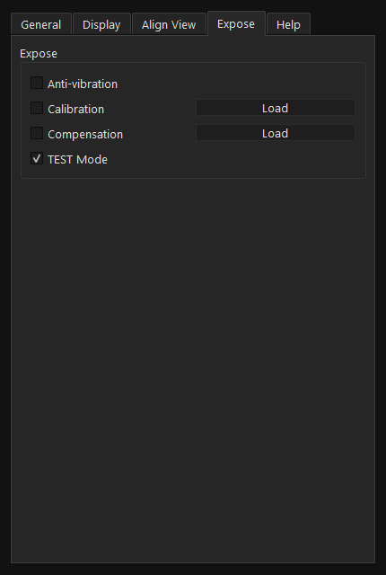
Expose 탭의 Calibration, Compensation, TEST Mode 영역입니다." loading="lazy">- LUT와 lens 선택이 맞지 않으면 같은 % 값이라도 실제 광량이 달라질 수 있습니다.
- Calibration을 끄면 intensity 표기는 다시 % 기준으로 돌아갑니다.
- LUT load 실패 시 파일 형식과 경로를 확인하고, 로그의
Calibration data load failed메시지를 확인합니다.
Compensation
Compensation mask를 불러와 DLP 출력에 보정 이미지를 적용하는 기능입니다. UV Keystone과는 목적이 다른 출력 보정입니다.
Setting > Expose를 엽니다.Compensationcheckbox를 켭니다.Load로.maskcompensation image를 불러옵니다.- 보정 적용 여부를 출력 전 다시 확인합니다.
Calibration LUT: 입력 intensity와 실제 광량의 관계를 lens별로 변환합니다.Compensation: 출력 이미지에 보정 mask를 적용합니다.UV Keystone: DLP 출력의 위치 왜곡을 역보정합니다.
Settings
장비 제어, DLP display, Align View, 노광 보정, TEST Mode를 탭별로 관리하는 설정 창입니다.
Use Legacy PDC05: 구버전 PDC05 controller를 사용할 때만 켭니다.Power ON/OFF: DLP controller 전원 제어입니다.Fan ON/OFF: DLP fan 제어입니다.- Theme 관련 버튼으로 UI 표시 테마를 바꿀 수 있습니다.
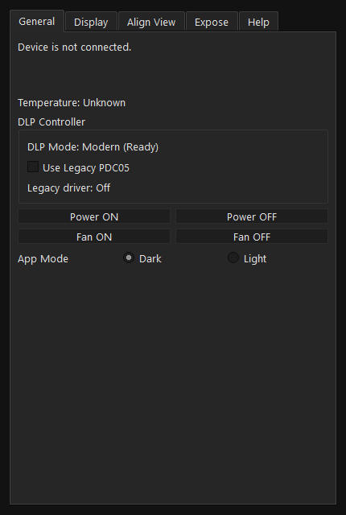
General 탭입니다. Legacy PDC05, Power, Fan 관련 항목을 설명합니다." loading="lazy">Connected Monitor List: 연결된 display 목록입니다.Apply: 선택 display를MASKLESS LITHO Display로 적용합니다.Current display: 현재 적용된 출력 대상입니다.- GPU 표시를 함께 확인해 잘못된 모니터 선택을 줄입니다.
Rotation Angle: Align View 회전값입니다.Reset Align: Align View 위치/크기/회전을 초기화합니다.Align Wizard: 1/2/4 Point Align과 UV Keystone Calibration 진입점입니다.UV Keystonestatus: profile ON/OFF와 profile 정보를 보여줍니다.Disable UV Keystone: profile은 유지하고 보정만 끕니다.Clear UV Keystone: 활성 profile을 해제합니다.
Anti-vibration: 노광 안정화를 위한 지연/보조 설정입니다.Calibration+Load: LUT 기반 intensity 변환입니다.Compensation+Load: compensation mask 적용입니다.TEST Mode: 장비 없이 UI flow를 확인합니다.Help탭은 도움말 진입점입니다.
Legacy DLP
구버전 PDC05 DLP controller를 사용할 때만 켜는 호환 모드입니다. 일반적으로는 modern mode를 유지합니다.
- 위치:
Setting > General > Use Legacy PDC05 - 기본값은 modern DLP controller mode입니다.
- Legacy mode는 구버전 DLL과 controller 환경에서만 사용합니다.
- 노광 중 DLP mode를 바꾸면 안 됩니다. 먼저
Stop으로 출력 상태를 정리합니다. - controller 종류가 확실하지 않으면 modern mode로 먼저 확인합니다.
TEST Mode
장비 없이 UI flow를 검증하기 위한 모드입니다. 실제 노광 전에는 TEST Mode 상태가 의도와 맞는지 반드시 확인해야 합니다.
Setting을 엽니다.Expose탭으로 이동합니다.TEST Mode를 켭니다.- 이미지 로드, Align View, Draw CAD, Expose Setup 흐름을 확인합니다.
- 실제 노광 전에는 TEST Mode를 원하는 상태로 다시 맞춥니다.
- TEST Mode는 장비 제어를 생략하거나 안전하게 우회해 UI flow를 확인하기 위한 용도입니다.
- 실제 장비에서 노광이 되지 않는다면 TEST Mode가 켜져 있는지 먼저 확인합니다.
- 반대로 장비 없는 PC에서 오류 없이 메뉴얼 캡쳐를 만들 때는 TEST Mode가 유용합니다.
Data Paths
설정, 로그, CAD output, UV Keystone profile, compensation mask가 저장되는 위치입니다.
| 항목 | 위치 | 설명 |
|---|---|---|
| Config | %USERPROFILE%\.maskless_v2\config\config.json | Display, LUT, CAD scale, UV Keystone 활성 상태 등 main window 설정 |
| LUT copy | %USERPROFILE%\.maskless_v2\config\lut.dat | Calibration LUT load 후 보관되는 기본 경로 |
| Compensation | %USERPROFILE%\.maskless_v2\config\compensation.mask | Load한 compensation image copy |
| Info log | %USERPROFILE%\.maskless_v2\logs\app_info.log | 일반 동작 로그 |
| Error log | %USERPROFILE%\.maskless_v2\logs\app_error.log | 예외와 오류 로그 |
| CAD output | %USERPROFILE%\.maskless_v2\cad\ | 자동 생성되는 CAD PNG와 .maskcad 기본 output 위치 |
| UV Keystone | %USERPROFILE%\.maskless_v2\keystone\*.maskkeystone | 17점 UV Keystone profile 저장 위치 |
| User assets | %USERPROFILE%\.maskless_v2\assets\ | 사용자 asset copy/cache 위치 |
Troubleshooting
문제가 생기면 먼저 Stop, DLP black output, TEST Mode, display 선택, 현재 실행 상태를 확인합니다.
| 증상 | 가능한 원인 | 해결 |
|---|---|---|
| DLP에 아무것도 나오지 않음 | Display 선택 오류, TEST Mode 상태, 장비 미연결 | Setting > Display에서 DLP monitor 선택 후 Apply, TEST Mode 확인 |
| 작업자 모니터에 전체 화면 패턴이 뜸 | DLP display 대신 일반 monitor 선택 | 즉시 Stop 후 Display 탭에서 monitor 재선택 |
Start가 실행되지 않음 | valid image step 없음 | Pattern Settings에서 이미지/GDS/CAD 결과를 로드하고 Add 실행 |
| Motorized Focus가 열리지 않음 | sequence, CAD Expose, manual LED ON 중 | Stop 또는 LED OFF 후 다시 실행 |
| Draw CAD가 열리지 않음 | 이미지 미로드, display 미설정, Align View 미표시 | Load image, Setting > Display Apply, Align Viewer > Show 순서 확인 |
| CAD output 실패 | 도형 없음 또는 lens scale profile 없음 | 도형 작성 후 Save Scale 실행 |
| GDS import 결과가 비어 있음 | layer/datatype 선택 오류, scale/origin 오류 | Select GDS Layer에서 다른 layer 선택, scale profile 확인 |
| UV Keystone이 적용되지 않음 | profile OFF, Disable 상태, display 해상도 불일치 | Setting > Align View status 확인, 필요하면 재보정 |
| Intensity 단위가 예상과 다름 | Calibration LUT ON/OFF 상태 변경 | Setting > Expose Calibration checkbox와 lens 선택 확인 |
%USERPROFILE%\.maskless_v2\logs\app_info.log, app_error.log를 함께 확인하세요.Release Notes v2.0.9
이 메뉴얼에 반영한 v2.0.9 주요 변경사항입니다.
Initialize아래Motorized Focus런처 버튼 추가- Motorized Focus를
maskless_v2_0_9.exe --motorized-focus내부 모드로 포함 dist/maskless_v2_0_9.zip을 단일 exe 구성으로 정리- Sequence, CAD Expose, manual LED ON 중 Focus 실행 차단
UV Keystone Calibration의 Align View 의존성 제거- 17개 raw DLP point를 각 4회 클릭해
.maskkeystoneprofile 생성 - 활성 UV Keystone profile을 Load image, CAD, GDS, Sequence, Expose Now, manual LED ON 출력 직전에 적용
Setting > Align View에 UV Keystone status, Disable, Clear controls 추가- Draw CAD boundary/draft/preview/measure guide를 실선으로 개선
- Draw CAD
W um,H um,Stroke um입력을 현재 um/px 기준 pixel 배수로 snap Load GDS를 일반 실행 파일에서 기본 표시- GDS는 editable CAD shape가 아니라 DLP PNG로 변환되는 흐름으로 정리